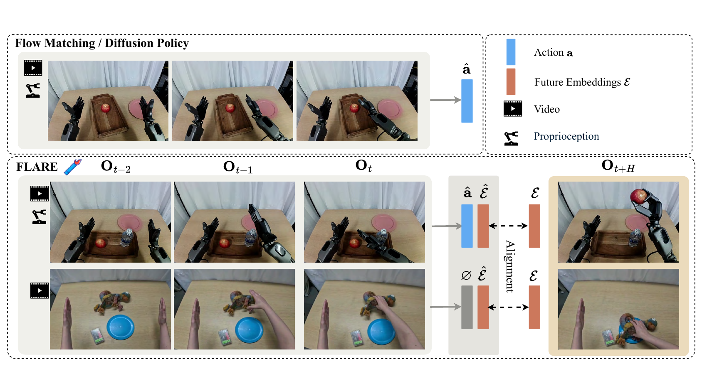

FLARE: Robot Learning with Implicit World Modeling
Ruijie Zheng 等 · arXiv:2505.15659 v1 · 2025 技术报告 · Zotero UBT2RNZL
FLARE 不在推理时生成未来像素，而是在 action DiT 内插入 future tokens，训练它们对齐真实未来观测的紧凑 embedding；部署仍只走直接动作生成，因此把“世界模型监督”压进策略内部。
Introduction：世界模型一定要把未来画出来吗
联合生成未来 RGB 与动作很直观，但高保真像素预测需要大模型和多步采样，既增加延迟，也让纹理细节与动作抽象争夺容量。FLARE 的出发点是：控制真正需要的是对未来任务状态的内部预判，不一定需要可观看的视频。它让现有 diffusion/flow policy 的隐藏状态预测一个紧凑、action-aware 的未来 observation embedding，部署时仍只输出动作。
展开原文 · 核心设计
“eliminating the need for full-frame reconstruction”
Related Work：FLARE 位于 VLA、显式 WAM 与视频表征之间
普通 diffusion policy 只学习动作分布，缺少预测动作后果的约束；显式 WAM 同时生成视频与动作，可视但昂贵；通用视觉自监督特征又可能强调类别和纹理，未必保留接触状态。FLARE 先用机器人控制数据训练 action-aware embedding，再把未来 embedding alignment 接到动作去噪网络内部，因此视频-only 数据也能训练“未来感”，而推理接口和现有 VLA 基本不变。
| Policy-only | 直接生成动作，速度快，但表示不必解释未来状态。 |
| 显式 video WAM | 未来可视化、易诊断，但像素生成成本高且目标可能与控制竞争。 |
| 通用 SSL embedding | 语义强，却可能忽略机器人接触与细微状态。 |
| FLARE | 用 action-aware teacher latent 监督策略内部 future token，推理时不解码 RGB。 |
§1 从显式 rollout 改成内部预测约束
§2 同一个策略，两条监督

1. 先得到目标 embedding
未来帧由 action-aware observation encoder 压成 $\mathcal E$。
输入是什么：评测或任务明确写出的起始场景、控制条件和目标要求。它规定模型从哪里开始、允许接收哪些信息、最后应该发生什么。
这一步究竟做什么：未来帧由 action-aware observation encoder 压成 $\mathcal E$。
输出到哪里：一套固定且可复现的输入条件，后续所有模型都必须在这套条件下生成或行动。这个结果会交给下一步“在 action DiT 中加 future token”继续处理。
为什么不能省略：它把未经处理的原始问题变成后续模块可以计算的输入，是整条链路的起点。
2. 在 action DiT 中加 future token
token 共享时空上下文，但用单独投影头预测 $\hat{\mathcal E}$。
输入是什么：来自上一步“先得到目标 embedding”的产物：一套固定且可复现的输入条件，后续所有模型都必须在这套条件下生成或行动。本步骤还会按论文设置读取当前条件、时间步或训练信号。
这一步究竟做什么：本步骤执行“在 action DiT 中加 future token”。具体来说，token 共享时空上下文，但用单独投影头预测 $\hat{\mathcal E}$。 它把原本模糊的‘看起来对不对’拆成可重复计算或人工核对的判断，从而让不同模型能在同一标准下比较。
输出到哪里：一组比原始输入更紧凑的内部特征；它不是最终动作或画面。这个结果会交给下一步“按数据可用性开 loss”继续处理。
为什么不能省略：模型不能高效地直接在所有原始像素和长序列上推理；这一步把信息压成后续模块能处理、比较和复用的形式。
3. 按数据可用性开 loss
机器人轨迹用 action flow + alignment；视频-only 数据只用 alignment。
输入是什么：来自上一步“在 action DiT 中加 future token”的产物：一组比原始输入更紧凑的内部特征；它不是最终动作或画面。本步骤还会按论文设置读取当前条件、时间步或训练信号。
这一步究竟做什么：机器人轨迹用 action flow + alignment；视频-only 数据只用 alignment。
输出到哪里：经过本步骤处理、含义更明确的中间结果。这是图中这条链路的最终产物，随后会进入真实执行、模型更新或指标评测。
为什么不能省略：学习算法只能从它见过的经历中改进；这一步决定训练数据是否覆盖成功、失败和恢复状态。
§3 为什么 teacher embedding 要 action-aware
通用视觉表征可能强调类别、纹理和背景，而非接触与可控状态。FLARE 先用机器人控制数据训练紧凑 observation embedding，使未来 target 与动作后果更一致；这也是其“implicit world model”能服务策略而非图像识别的关键。
§4 动作流匹配 + 未来对齐
- $\mathcal L_{FM}$
- 监督连续 action chunk 的生成向量场。
- $\mathcal L_{future}$
- 约束内部 future token 预判动作后的未来 latent。
- 部署
- 只积分动作流；无需把 $\hat{\mathcal E}$ 解码成图像。
§5 证据与局限
实验归因与复现变量
FLARE 的关键主张是“latent future alignment 本身”带来提升，因此应在同一 policy、数据和推理预算下对比 policy-only、通用视觉 teacher、action-aware teacher 与显式视频辅助头。
- 说明 teacher embedding 如何用动作数据训练、是否在下游评测数据上预训练。
- 固定 future horizon $H$，比较短期可控状态与长期语义状态。
- 在人类视频样本上严格屏蔽 action loss，只保留合法的 future alignment。
- 报告 $\lambda$、future token 数和梯度规模，确认辅助损失没有压过动作 flow。
- 除成功率外增加 latent probing 或 nearest-neighbor，可诊断模型到底预判了什么。
§6 路线定位
FLARE 比 LAPA 更像“世界模型正则化的 VLA”：latent 不是待映射的动作 code，而是策略内部对未来状态的预测 token。它牺牲可视 rollout，换取直接、低延迟的 action interface。